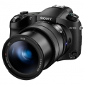

器材库 > 不可换镜头数码相机 > RX10 III

规格总览
发布日期
2016-03-30
厂家推荐价格
9,799.00 （人民币）
影像规格
影像传感器
Exmor RS CMOS
影像传感器尺寸
1英寸（13.2×8.8mm）
有效像素
2010万
影像处理器
BIONZ X
静态图像格式
JPEG, RAW
静态图像尺寸
[3:2] 5472×3648, 3888×2592, 2736×1824 [16:9] 5472×3080, 3648×2056, 2720×1528 [4:3] 4864×3648, 3648×2736, 2592×1944, VGA [1:1] 3648×3648, 2544×2544, 1920×1920
短片格式
MP4, AVCHD 2.0, XAVC S
短片尺寸
AVCHD: 1920×1080，50p/50i/25p XAVC S 4K: 3840x2160，25p XAVC S HD: 1920x1080，50p/25p/100p MP4: 1920x1080，50p/25p / 1280x720，25p
防抖系统
增强光学防抖
镜头和对焦
镜头结构
18片/13组
非球面镜片
6片
低/超低色散镜片
1枚超低色散ED、5枚低色散ED与2枚低色散ED非球面镜片
焦距
8.8mm-220mm
等效35mm画幅焦距
24mm-600mm
最大光圈
f/2.4-4
光学变焦
25倍
数码变焦
[静态影像]20M约100倍/10M约140倍/5M约200倍/VGA 约380倍[动态影像]约100倍
最近对焦距离
广角：3cm、长焦：72cm
对焦模式
单次AF/连续AF/DMF/手动对焦
曝光控制
测光模式
点测光, 多重测光, 中心测光
场景模式
肖像/运动/微距/风景/黄昏/夜景/手持夜景/夜景肖像/动作防抖
快门速度
智能自动（4秒 - 1/2000秒）/程序自动 （30秒 - 1/2000秒） /光圈优先（30秒 - 1/2000秒）/快门优先（30秒 - 1/2000秒）/手动曝光（B门，30秒- 1/2000秒）
曝光补偿
±3EV以1/3EV级调整
ISO感光度
自动（ISO 100-12800，可限定上下值），100/125/160/200/250/320/400/500/640/800/1000/1250/1600/2000/2500/3200/4000/5000/6400/8000/10000/12800 （可扩展至 ISO 64/80）,多帧降噪: 自动（ISO 100-12800），100/ 200/400/800/1600/3200/6400/12800/25600
白平衡
自动/日光/阴影/阴天/白炽灯/荧光灯（暖白色）/荧光灯（冷白色）/荧光灯（日光白色）/荧光灯（日光）/ 闪光灯 /（色温/滤光片）/自定义/自定义设置
自拍
关/10 秒/5 秒/2 秒/10 秒或5秒或2秒（连拍3或5张）/10 秒或5秒或2秒阶段拍摄
连拍
最快每秒14张
拍摄模式
单张拍摄/连拍/速度优先连拍/自拍定时/自拍定时(连拍)/连续阶段曝光/单拍阶段曝光/白平衡阶段曝光/DRO阶段曝光
创意滤镜
[静态影像] 玩具相机/流行色彩/分色/复古照片/柔光亮调/局部彩色/强反差单色/柔焦/HDR绘画/丰富色调黑白/微缩景观/水彩画/插图[动态影像] 玩具相机/流行色彩/分色/复古照片/柔光亮调/局部彩色/强反差单色
闪光灯
内置闪光灯
弹出式
闪光涵盖范围
ISO 自动模式:约1.0m到10.8m(广角端) /约1.0m到 6.5m(长焦端); ISO 12800:可达约20.8m(广角端) /约12.8m(长焦端)
取景规格
取景器
电子取景器
取景器像素
约235万
LCD类型
Xtra Fine LCD
LCD尺寸
3.0英寸
LCD像素
约123万
LCD特性
翻转屏
亮度调节级数
手动（5档）/晴朗天气
文件输入/输出
存储卡
MS/MS PRO记忆棒, SD/SDHC, SDXC
数据接口
USB2.0
视频/音频接口
Micro HDMI 接口
无线功能
Wi-Fi, NFC
配件端口
热靴, 耳机, 麦克风输入端子
电源
电池
NP-FW50
续航能力
[静态影像] 约420张/约210分钟（LCD），约370张/约185分钟（取景器）（CIPA标准） [动态影像] 约120分钟（LCD）/约130分钟（取景器）（CIPA标准）
外观
材质
机身采用镁铝合金材质
颜色
黑色
尺寸
132.5×94.0×127.4mm
重量
仅机身约1051g / 含电池和存储卡约1095g
其它
附件
锂离子电池组 NP-FW50，电源适配器AC-UUD12 ，Micro USB 连接线，肩带，镜头盖，热靴盖，遮光罩，使用说明书，保修卡
备注
防尘防滴
罗亚2019-07-02 22:224.75 分
操作性 5.00功能性 5.00美观性 5.00趣味性 5.00耐用性 4.50性价比 4.50解像力 4.00色彩还原 5.00
擦枪走水2018-08-21 21:484.81 分
操作性 4.50功能性 5.00美观性 5.00趣味性 5.00耐用性 5.00性价比 4.00解像力 5.00色彩还原 5.00
莫飞2016-04-21 11:254.25 分
操作性 4.50功能性 4.50美观性 4.50趣味性 4.50耐用性 4.50性价比 3.50解像力 4.00色彩还原 4.00
产品图 / 样片
RX10 III
评测 / 相关文章
- 详细内容 （存档）
- 把640大炮揣进兜 索尼黑卡RX10 III相机评测 （存档）
- ［试用］索尼黑卡RX10Ⅲ印度博物摄影之旅 （存档）
- ［试用］索尼黑卡RX10III便携拍鸟利器 （存档）
- ［资讯］DP公布2016年度相机获奖结果 （存档）
- ［资讯］Imaging Resource辣评相机中的入门神器 （存档）
- ［试用］索尼黑卡RX10 III 追星族的演唱会拍摄神器 （存档）
- ［资讯］家用福利 DxOMark公布RX10III成绩 （存档）
- ［试用］索尼黑卡RX10 III实拍样张 （存档）
- ［资讯］索尼RX10 III数码相机开箱 （存档）
- ［试用］终于遇见你 索尼RX10III使用心得 （存档）
相关文章
- ［试用］索尼黑卡RX10Ⅲ印度博物摄影之旅 （存档）
- ［试用］索尼黑卡RX10III便携拍鸟利器 （存档）
- ［资讯］DP公布2016年度相机获奖结果 （存档）
- ［资讯］Imaging Resource辣评相机中的入门神器 （存档）
- ［试用］索尼黑卡RX10 III 追星族的演唱会拍摄神器 （存档）
- ［资讯］家用福利 DxOMark公布RX10III成绩 （存档）
- ［试用］把640大炮揣进兜 索尼黑卡RX10 III评测 （存档）
- ［试用］索尼黑卡RX10 III实拍样张 （存档）
- ［资讯］索尼RX10 III数码相机开箱 （存档）
- ［试用］终于遇见你 索尼RX10III使用心得 （存档）
- ［试用］索尼黑卡RX10Ⅲ印度博物摄影之旅 （原站已下线）
- ［试用］索尼黑卡RX10III便携拍鸟利器 （原站已下线）
- ［资讯］DP公布2016年度相机获奖结果 （原站已下线）
- ［资讯］Imaging Resource辣评相机中的入门神器 （原站已下线）
- ［试用］索尼黑卡RX10 III 追星族的演唱会拍摄神器 （原站已下线）
- ［资讯］家用福利 DxOMark公布RX10III成绩 （原站已下线）
- ［试用］把640大炮揣进兜 索尼黑卡RX10 III评测 （原站已下线）
- ［试用］索尼黑卡RX10 III实拍样张 （原站已下线）
- ［资讯］索尼RX10 III数码相机开箱 （原站已下线）
- ［试用］终于遇见你 索尼RX10III使用心得 （原站已下线）